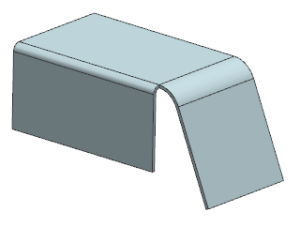
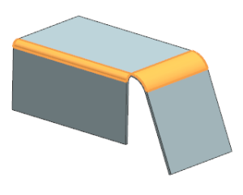
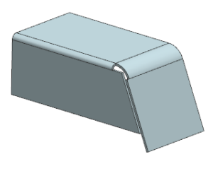

Open nsm2_85_closed_corner.

On the NX Sheet Metal toolbar, from the Corner Drop-down list, click Closed Corner.
In the Closed Corner dialog box, set Type to Close and Relief.
In the Corner Properties group, set the following:
Treatment = Open
Overlap = Closed
Gap = 0
Select the two bend regions shown.

You can select the bends in any order, but it affects the positioning when the corners overlap. For this example, the left bend was chosen first.
Click OK.
